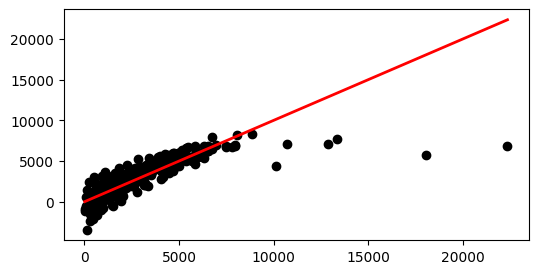
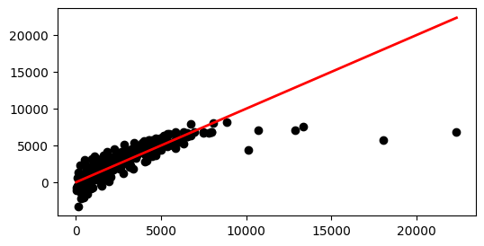
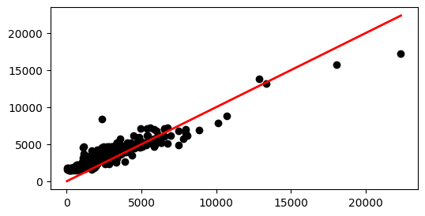
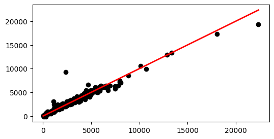
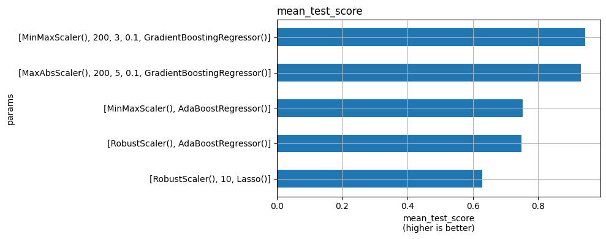

One Practicum; deadline: 12 pm (noon), 1st July 2024 (day 13 of the module)
Zip together the following files: - CET2061_Practicum_Submission_Your_Name.ipynb. - Your created dataset file (in .csv) in Part 2
Ensure that when your zipped file is extracted, your CET2061_Practicum_Submission_Your_Name.ipynb can run without any errors, particularly FileNotFoundError. Please double check before submitting. Failure to do so will result in a Not Yet Competent (NYC).
splited = train_test_split( features.to_numpy(), np.array(y).reshape(-1, 1), test_size=0.3, random_state=SEED, shuffle=True,)# for i, c in enumerate(splited):# print(c.shape)X_tr, X_te, y_tr, y_te = splited
key 0 regressor_no_alpha
#df_results.mean_test_score.max() 0.6291435127473595
r2 test: 0.5845610832685342
r2 train: 0.6393047718158889
==========================
key 1 regressor_l1
#df_results.mean_test_score.max() 0.6294050711060167
r2 test: 0.588977186127529
r2 train: 0.6389525525060908
==========================
key 2 ensemble_without_learning_rate
#df_results.mean_test_score.max() 0.7522981714324395
r2 test: 0.7427374665449082
r2 train: 0.8223271617293714
==========================
key 3 ensemble_with_learning_rate
#df_results.mean_test_score.max() 0.9431606598475064
r2 test: 0.9480409913205419
r2 train: 0.9964943673011502
==========================
------------
combine max 0.9431606598475064
Requirement already satisfied: plotly in /Users/daddy2/miniconda3/envs/py311torch/lib/python3.11/site-packages (5.22.0)
Requirement already satisfied: tenacity>=6.2.0 in /Users/daddy2/miniconda3/envs/py311torch/lib/python3.11/site-packages (from plotly) (8.4.1)
Requirement already satisfied: packaging in /Users/daddy2/miniconda3/envs/py311torch/lib/python3.11/site-packages (from plotly) (24.1)
Note: you may need to restart the kernel to use updated packages.
zsh:1: 4.2.0 not found
Note: you may need to restart the kernel to use updated packages.
params
mean_test_score
2
[MaxAbsScaler(), LinearRegression()]
0.629144
0
[StandardScaler(), LinearRegression()]
0.629144

params
mean_test_score
11
[RobustScaler(), 10, Lasso()]
0.629405
8
[StandardScaler(), 10, Lasso()]
0.629388

params
mean_test_score
1
[MinMaxScaler(), AdaBoostRegressor()]
0.752298
3
[RobustScaler(), AdaBoostRegressor()]
0.748383

params
mean_test_score
20
[MinMaxScaler(), 200, 3, 0.1, GradientBoosting...
0.943161
36
[MaxAbsScaler(), 200, 5, 0.1, GradientBoosting...
0.930388

params
mean_test_score
36
[MaxAbsScaler(), 200, 5, 0.1, GradientBoosting...
0.930388
20
[MinMaxScaler(), 200, 3, 0.1, GradientBoosting...
0.943161

2.2.2 Setup search grid, then search
2.3 Predict
Code
### Check result
3 extract coefficients
Code
%pip install plotly%pip install nbformat>=4.2.0
3.1 2.5 feature_importances_
3.2 Evaluation
3.2.1 2.6 Accuracy
3.3 Explanation
understanding and explanation about this statement: “Essentially, supervised machine learning is just to establish the relationship between input (𝑥) and output (𝑦).” Part 3.